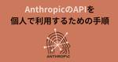
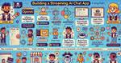
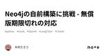

#LangChainタグ
https://note.com/hashtag/LangChain
「#LangChain」の人気タグ記事一覧です
フィード
Doxygen+gpt-4o+Neo4jによるシステム構成図自動化
#LangChainタグ
はじめに システム開発者であれば、一度は「システム関連図」を自動化できないかと考えたことがあるはずです。私も、過去の投稿記事でPDFや画像認識を使って自動生成できないか試みましたが、精度や汎用性に限界を感じました。最終的に、Excelのシェープ（円や四角）を利用して関連性を基づき作図する方法に行き着きました。結果としては十分な精度が得られたものの、シェープ同士の関係性を手作業で定義するのは非常に手間がかかり、現実的ではありません。 続きをみる
4日前

Anthropic APIを個人で利用するための手順について
#LangChainタグ
AIモデルClaudeを使えるAutropicのAPIを 2024年10月より個人でも利用できるようになりました。 早速、使ってみよう思ったのですが、 利用開始に至るまでのところで、意外と手こずりました。 続きをみる
5日前

LangChainとGradioを使ったAIストリーミングアプリの構築方法
#LangChainタグ
このガイドでは、LangChainライブラリを使ってOpenAI、Google、Anthropicの各AIモデルと連携し、Gradioを利用してストリーミング形式でユーザーと対話できるアプリを構築する方法について解説します。この記事では、基本的なセットアップから、環境変数の設定、モデルの読み込みまでのステップを分かりやすく説明します。 続きをみる
7日前

Neo4jの自前構築に挑戦 - 無償版期限切れの対応
#LangChainタグ
背景・目的 以前投稿した記事では、グラフ描画にNeo4j Auraを使用していましたが、無償版の有効期限が切れてしまい、サービスを利用できなくなりました。そこで今回は、Neo4jを自前で構築し、運用することにしました。また、以前の記事では実現できなかった、作成したグラフに対してChainlitで質問を行う機能にも挑戦してみました。 続きをみる
12日前
Week of 7/8(2024) LangChain Release Notes
#LangChainタグ
[Week of 7/8] LangChain Release NotesSee new use cases for building & deploying with LangGraphblog.langchain.dev LangGraph Cloudを使用した構築とデプロイの新しいユースケース、改良されたLangGraphドキュメント、およびLangSmithの自己改善型評価者の詳細をご覧ください。さらに、エージェントの最新のトレンドや、近日開催予定のエージェントをテーマにしたハッカソンの詳細もご覧いただけます。 続きをみる
14日前

マルチAI Agent : 複数のLLMを用いた並列処理と自動要約
#LangChainタグ
はじめに 業務を行う上で、複数の大規模言語モデル（LLM）に同じ依頼をして結果を比較することがよくあります。しかし、個別に実行するのは手間がかかります。そこで、LangGraphを使って、一つの問い合わせで複数のモデルからの回答を得て、さらにLLMの力を使って自動的にまとめる方法を探りました。 続きをみる
18日前
一気通貫で実現するLlama3.2: ローカルLLMとローカルEmbeddingの構築
#LangChainタグ
はじめに 前回、自宅のPCに軽量な「オープンLLM」であるLlama3.2を導入し、その性能を確認しました。レスポンスもまずまずで、緊急性の低いプロジェクトであれば十分に活用できることが分かりました。これは非常に喜ばしい結果です。 続きをみる
19日前
PatentfieldAPIで特許公報を自動取得して特許文書のベクトル検索を実施する
#LangChainタグ
こんにちは、Patentfieldの公式noteです。 Patentfield公式noteでは、PatentfieldAPIを活用した具体的な開発実装事例を紹介しています。 この記事では、PatentfieldのAPIを用いて特許公報の文書を取得し、その文書をベクトルデータに変換し、特許文書に対するベクトル検索を実施する方法について解説します。 続きをみる
19日前
AzureからGPTを使ってみる|memoryを使って会話履歴に沿って会話する。その３
#LangChainタグ
LangchainのRunnableWithMessageHistoryで保持する会話数を規定する RunnableWithMessageHistoryを使って会話履歴に沿ってGPTと会話するコードを以前書きました。 続きをみる
19日前
ローカルLLMの進化：Llama3.2で特許検索システムを再構築！
#LangChainタグ
はじめに 今回は、「ローカルLLM」にリベンジします。以前、ローカル環境にLLMを構築した際、その過程を記事にまとめました。しかし、結果として応答に10分以上かかることが多く、実用には程遠い状況でした。（記事公開後も再度トライしてみましたが、1時間以上応答がないことも珍しくありませんでした…） 続きをみる
20日前
LangChainとNeo4jでシステム連携図を自動生成する方法（３）
#LangChainタグ
はじめに 前回と前々回では、文章と画像をインプットとしてNeo4jでグラフを描画しました。それぞれ一定の成果は得られたものの、商用利用に耐えうる精度には達しませんでした。 続きをみる
21日前
日本アイ・ビー・エム株式会社でインターンシップ2ヶ月目を振り返って🤗
#LangChainタグ
こんばんは〜 2024年度のアクセスブルーがはじまって、 はや2ヶ月になりました。 あまり詳しく書いてしまうと情報漏えいになってしまうんで、気をつけてかいてみます🤗 続きをみる
21日前
LangChainとNeo4jでシステム連携図を自動生成する方法（２）
#LangChainタグ
すみません、文章が今までのトーン違うのは、ChatGPTに「技術者が楽しくなるような文章にして」というオーダーを出したためです。ご了承ください・・・ はじめに 続きをみる
22日前
LangChainとNeo4jでシステム連携図を自動生成する方法（１）
#LangChainタグ
初めに 社内でシステムの管理をしていると、各システムの連携を図や表で表す必要が出てくることがよくあります。しかし、人間は細かい管理には向いておらず、定期的なメンテナンスや最新化、そして統一された粒度（レベル）の管理を続けるのは非常に困難です。 続きをみる
22日前
W&B Weave を使ってRAGボットの性能を大幅改善 🤖
#LangChainタグ
このブログでは、Weights & Biasesの製品であるWeaveを使用して、Weights & Biasesが提供するサービスの1つであるwandbotを改善するドッグフーディングの例を紹介します。（ドッグフーディング: 自社の製品を使い、自社のサービスを改善することの例え） 続きをみる
23日前
OCR vs OpenAIで表を解析してみた！精度の比較と課題を徹底検証
#LangChainタグ
はじめに 先日、「OCRとOpenAIの比較」や「宝くじの番号をOCRで一括確認する方法」に関する記事を投稿しました。主に画像内の文字や数字の認識精度を比較した内容です。詳しくは以下の記事をご覧ください。 続きをみる
1ヶ月前